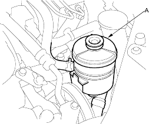
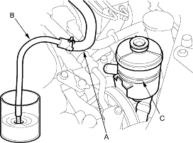

- Check the reservoir (A) at regular intervals, and add the recommended fluid as necessary. Always use Genuine Honda Power Steering Fluid. Using any other type of power steering fluid or automatic transmission fluid can cause increased wear and poor steering in cold weather.
SYSTEM CAPACITY:
0.6 l (0.63 US. qt, 0.53 lmp.qt.) at disassembly
RESERVOIR CAPACITY:
0.3 l (0.32 US. qt, 0.26 lmp.qt.)

- Raise the reservoir, then disconnect the return hose (A) to drain the reservoir. Take care not to spill the fluid on the body and parts. Wipe off any spilled fluid at once.

- Connect a hose (B) of suitable diameter to the disconnected return hose, and put the hose end in a suitable container.
- Start the engine, let it run at idle, and turn the steering wheel from lock-to-lock several times. When fluid stops running out of the hose, shut off the engine. Discard the fluid.
- Reinstall the return hose on the reservoir.
- Fill the reservoir to the upper level line (C).
- Start the engine and run it at fast idle, then turn the steering from lock-to-lock several times to bleed air from the system.
- Recheck the fluid level and add more if necessary. Do not fill the reservoir beyond the upper level line.